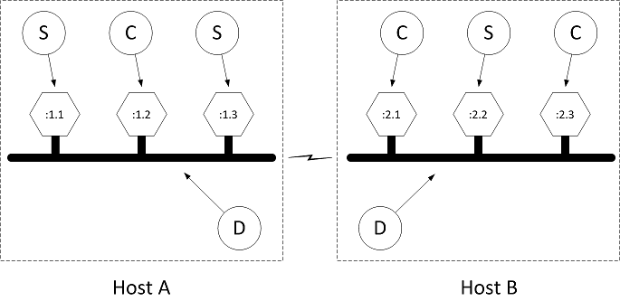
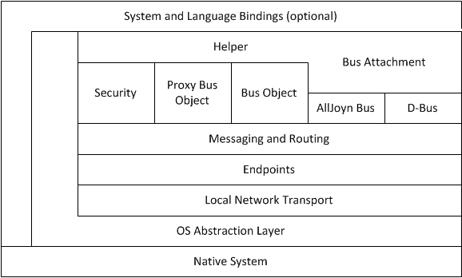
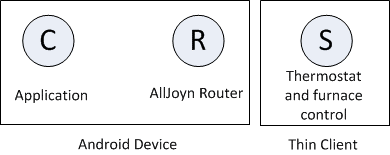
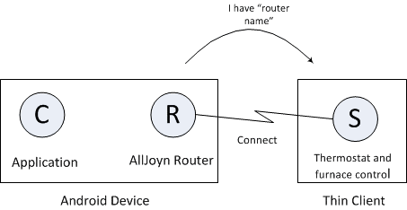
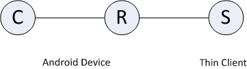
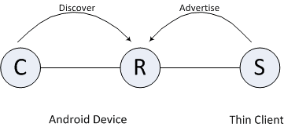
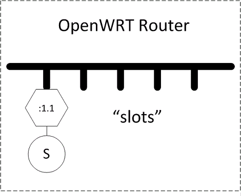
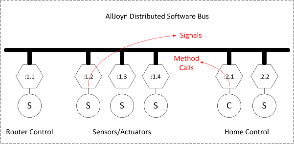

AllJoyn™ 精简内核
概览
AllJoyn 是一套开源软件系统，它为可以夸不同类型设备运行的分布式应用提供运行平台，并且强调移动、安全和动态可配置的特性。AllJoyn是“平台不依赖”的，这意味着它在设计之时就尽量做到不依赖与特定的操作系统、硬件或硬件上运行的软件。
AllJoyn 的标准内核库(AJSCL)中的各子模块设计是考虑了在 Microsoft Windows、Linux、Android、iOS、OS X、OpenWRT 下以及作为互联网浏览器的整合插件的方式使用的要求。这些软件系统的一个共有的特性是它们都运行于通用计算机之上。通用计算机通常拥有可观数量的存储能力，有充足的电力、计算能力以及由此带来的能支持多进程、多线程和多语言环境的操作系统。
与此不同，嵌入式系统运行于嵌入在一个大型设备上的微处理器当中以提供特定的功能。由于嵌入式系统只需要执行特定的任务或一些有限数量的功能，工程师可以优化这些系统以便能在具有更小的存储空间、更有限的处理器速度、更省电、更少的外设和用户接口等的硬件平台上运行来减小产品的尺寸与价格。AllJoyn Thin Core Library（AJTCL）就是以将 AllJoyn 分布式编程环境的优势应用于嵌入式系统为目标应运而生的。
由于 AJTCL 将要运行的操作环境将会是非常受限的，运行于此类系统上的 AllJoyn 组建必须适应各类限制。具体来说，这就意味着我们将不具有 AllJoyn router (需要多线程)所具有的奢侈条件，比如丰富的网络连接、使用相对大的 RAM 和 ROM 空间等。同时我们也不具备运行能够包含课更换语言关联的面向对象的编程环境的条件。在这样的条件下，AJTCL 只考虑单独使用 C 语言来实现总线接入的功能（参见 Introduction to the AllJoyn Framework）。与接口、方法、信号、属性以及总线对象所对应的数据结构都进行了高度优化以节省空间，开发者使用的 API 也因此有很大的不同。
虽然 API 会有所不同，但是所有的 AJSCL 下的主要的概念性模块都可以在 AJTCL 中找到；它们更类似于以一种更紧凑的形式予以展现或者说实际上是在另一个远端能力更强的机器上运行而已。
注意: 当我们提到 AllJoyn Standard Library (AJSCL)时，我们更明确的说是指在通用计算机上运行的这些模块的版本。
概念性模型
正如以上章节提到的，AJTCL 中使用最高层次的抽象模型与 AJSCL 系统是完全对应的。在 Introduction to the AllJoyn Framework 中有专门的章节 Conceptual Overview (概念综述)为大家描述了这一抽象模型。在概念综述的章节中，我们假设读者已经熟悉了相关文档中对抽象模型的介绍，因此我们只会涉及理解 AJTCL 结构所需要的特使的部分。
AllJoyn Thin Core Library 仍然是 AllJoyn
需要特别强调与注意的是 AJTCL 是 AllJoyn 框架的一部分。Thin Core Library 具有完全的对 AJSCL 的互操作性。由于 AllJoyn 网络连接协议在两种系统下都有完整的实现，AJSCL 是完全不用知道与之沟通的是否是一个 Thin Core Library 的，对于 AJTCL 也是同样。
按照 Introduction to the AllJoyn Framework的介绍，AllJoyn 分布式总线的基本结构可以由挂靠于多个独立的物理主机上的总线段共同组成。

图: AllJoyn 分布式总线
每一个挂靠于特定主机的总线段在图中用标为 Host A 和 Host B 的虚线所围方框表示。每一个总线段都由一个 AllJoyn 路由器（图中标为 D 的圆圈所示）来实现。每个主机都可能有多个设备接入，连接至本地域（图中六边形所示），将它们分为服务端（S）和客户端（C）。
由于运行 AJTCL 的设备通常没有资源运行路由程序，在 AllJoyn 的结构中连接到分布式总线上的 Thin Core Library 借用主机上运行的路由程序。

图: AllJoyn 下连接 Thin Core Libraries 的分布式总线
需要注意的是嵌入式系统 A 和嵌入式系统 B 与他们所属的运行用来管理分布式总线段的路由程序的主机 B 是不同的设备。 如 Introduction to the AllJoyn Framework 所述，嵌入式系统与路由设备之间通过网络传输的是 AllJoyn 的各类消息，用来实现总线方法、总线信号以及属性等在各自会话内的交换。
在有些应用中，会有要求 AJTCL 设备连接或借用已存在的近场路由的需求，我们称之为非信任关系（从路由角度来说）。同事也会有允许特定的 AJTCL 设备连接特定的路由的需求，我们称之为可信任关系（同样从路由角度来说）。
这些关系是通过使用发现与连接流程来实现的，概念上讲这与服务端与客户端的发现与连接流程是类似的。一个 AllJoyn 路由设备会主动向一组 AJTCL 设备发布其公开的命名表示其接入的能力。这一广告由路由配置或是一个特定的 AllJoyn 广告组件来驱动。当向一个路由设备发起一次连接请求时，会产生一个发现事件，对于期望信任关系的路由服务，可能会选择向特定的 Thin Core Library（或者 Thin Core Library 的模仿者）提出询问以产生一次鉴权。对于非信任关系的情况，路由设备有可能直接选择允许任何连接请求，而在此情况下，相关的路由服务不会允许 Thin Core Library 进行任何会引起与非本地设备建立会话的操作（即“产生费用的服务”）。
如上所述，对于 AJTL 设备而言连接的过程可以被分为三个阶段：
- 发现阶段
- 连接阶段
- 认证阶段
发现阶段工作原理与在 Introduction to the AllJoyn Framework 中描述的服务广告和发现一样，但是两个区别。第一个区别是以 AJTCL 发现为目的的广告是“安静”模式的，简单讲也就是说这类广告不是有路由器无偿发放的。
第二个区别是对于安静广告的回应是安静的，我们称之为安静回应。也就是说回应将会被单独直接发回给请求者而不是类似于“主动”广告那样广播出去。这样的改变的主要原因是允许没有实现多播回应的嵌入式设备参与到 AllJoyn 分布式系统中来。
什么是 AllJoyn Thin Core Library 设备？
一个典型的 AJTCL 设备概念上来讲类似于一个无线传感器网络中的传感器节点。传感器节点通常是能量、计算能力、存储能力或其它资源均受限的小尺寸传感器或伺服器。它们能够感知周围的情况，与外界沟通发生的事件，或者有可能根据内部的处理机制或外部事件的结果采取特定的行动。这非常依赖于设备的功能定义，能归为此类定义的设备我们可以举一些其中很小一部分的例子：
- 电灯开关
- 恒温器
- 空调
- 排风扇
- 烟雾传感器
- 运动传感器
- 湿度传感器
- 麦克风
- 扩音器
- 耳机
- 门
- 门铃
- 微波炉
- 冰箱
- 烤箱
关于传感器网络有着大量的文献进行讨论。与 WSNs 中不太看重安全性的典型使用的自组织、多跳自组网的无线网络不同 AllJoyn 架构通常运行于参与设备都是相关的且经过认证的 Wi-Fi 基础模式的网络之上。为了完成对 Wi-Fi 网络的安全认证，AJTCL 使用了称为“onboarding（登录）”的流程。登录服务架构使通常不具有友好用户界面的 Thin Core Library 设备能够获得足够的目标网络的信息来完成加入该网络所需的许可与鉴权的过程。登录服务的架构在专门的章节中有详尽的描述。
作为传感器节点在 AllJoyn 的场景中 AJTCL 设备通常实现一项服务。它使用所依赖的硬件感知周围的情况并且将事件以 AllJoyn 信号的方式发送给外界，并根据由其他设备发送的事件或响应 AllJoyn 客户端的远程方法调用触发一次动作，如 Introduction to the AllJoyn Framework 中所描述的那样。
Thin Core Library 结构
由于 AllJoyn Thin Core Library (AJTCL) 必须运行于能源、处理能力及内存均受限的设备上，没有足够的资源使用与通用计算机系统上运行的 AllJoyn 标准内核库 (AJSCL) 类似的结构。
层次化的 AJSCL 或服务流程如下图所示。

图: AJSCL 层
更详细的各层的讨论可以参考 Introduction to the AllJoyn Framework 。
在此需要注意的非常重要的一点是每一个 AllJoyn 分层中的客户端或服务端都对应于一个 AllJoyn 流程上的应用。
每一个具有 AJSCL 主机都具有至少一个 AllJoyn 路由服务。这一服务在独立路由的情况下只有自己一个进程，在集成路由的应用情况下也可能和应用程序联合部署。分层次的 AJSCL 路由结构如下图所示。

图: AJSCL 路由层次结构
需要注意的是路由功能还提供在路由器之间转发消息的额外支持，并具有使用多网络传输机制如 Wi-Fi 直连的能力。实现这些功能所需的计算能力、能耗和存储代价将是非常可观的。
显然如此大量的代码是无法在受限的嵌入式系统上运行的，因此 AJTCL 精简了大量的代码只保留了必须存在的部分以使其能运行于所需的设备之上。为此基本的运行环境仅限于最小化的实时C语言环境，并借用其他设备来完成路由的角色。与 AJSCL 不同，AJTCL 去除了 AJSL 系统中很多上层表述性部分，如下图所示。

Figure: AJTCL 层次结构
AJTCL只向总线接入程序开放了尽可能少的所需的 API，并直接开放了消息接口而非帮助函数。
消息层没有使用抽象传输机制而是直接使用了 UDP 和 TCP。一个非常简易的接口层用来提取个别所需的原生系统函数，整个包都是使用C语言编写的以保证最小的代码尺寸。由于优化的结果，AJTCL 系统可以在仅有 20Kbybtes 存储空间的系统上运行，而一个路由服务加上 C++ 的客户或服务端的集合将会需要10倍的存储空间，Java 语言的版本所需空间甚至达到了 40 倍。
系统集成
为了使这里的讨论更直观具体，我们这里举两个分布式系统的例子：
- 一个运行单个 AllJoyn 应用的智能手机上的最小系统与一个 AJTCL 设备互通。这个例子用来说明上文中描述的信任关系。
- 一个无线路由器上运行路由服务的相对复杂的系统。
注意: 通常来讲实际情况是一个运行 OpenWRT 的路由器上有一个预装的 AllJoyn 路由服务。这一路由接受来自于已经登录到 Wi-Fi 网路的 Thin Core Library 的非信任连接。
一些AJTCL设备连接到路由器作为基于 AllJoyn 的无线传感器网络的传感器节点，由一台通用计算机执行数据融合功能。
注意: 在无线传感器网络中，数据融合专指一些不同的节点从一定数量的传感器节点上收集结果并进行集成或“融合”，然后依据这些传感器节点上得到的数据产生相应的结果或需要执行的动作。
一个最小化的 Thin Core Library 系统
一个使用 AJTCL 的最小化系统的例子包括一个运行 AJSCL 的单主机和一个 Thin Core Library 设备。AJSCL 提供了 Thin Core Library 连接的 AllJoyn 路由器，并且提供一个运行使用 Thin Core Library 的应用的平台。如上面所述，Thin Core Library 通常作为一种传感器节点使用，向主机上运行的应用发送数据。应用程序以某种方式处理这些数据并向传感器发送命令以更改其环境参数。 一个简单而合理的系统，例如墙上有一个控制锅炉的恒温器，Android 设备上有一个用于控制的应用程序。AJSCL 会运行在 Android 设备上而墙上的恒温器内运行 AJTCL。

图: 最小系统例子
在这个例子里，一个需求是墙上的恒温器只能被 Android 设备上对应的恒温控制程序控制。 由于例子中恒温器只能被 Android 设备上对应的恒温控制程序控制，所以恒温器很可能要求与 Android 上的应用所使用的路由器建立连接。这意味着 Android 应用应该与 AllJoyn 路由器绑定并且只有这一特定的绑定的路由器/应用对才能以路由器的能力告知 Thin Core Library 来使用。这类应用导致 AJTCL 和路由器/应用对之间的可信任关系。 之后应用会请求绑定的路由器以安静模式公示一个 AJTCL 可见的公开名（例如com.company.BusNode）

图: Thin Core Library 路由器发现
当路由器收到了一个对它以安静模式广播的公开名的准确的询问时，它会回应一个标示表明需要的公开名确实连接到了这一特定的路由器上。之后 AJTCL 会试图连接到有回应的路由器上。

图: Thin Core Library 连接尝试
至此一个逻辑上的 AllJoyn 总线已经形成了，应用程序与 Thin Core Library 服务都连接到了绑定的 Android 设备上的路由器上。使用 Introduction to the AllJoyn Framework 中的圆圈图来表述这一系统如下图所示，这样的连接与路由器已与服务端和客户端建立了连接的效果一致。

Figure: Thin Core Library 系统举例
此时 AJTCL 已经和与应用绑定了的路由器建立了连接，但是应用和 AJTCL 都不知道彼此的存在。通常此时 AllJoyn 场景中 AJTCL 会请求一个公开的总线名并且实例化一个服务。如 Introduction to the AllJoyn Framework 所描述的 Thin Core Library 会创建一个会话接口并且使用 Thin Core Library APIs 广播一个公开名。这一公开名通常与绑定的路由器广告的公开名不同；它对应于 Thin CoreLibrary 与应用程序间的客户端/服务端的关系而不是路由器与 Thin Core Library 间的关系。然后 Android 设备上的应用会进行这一公开名的服务发现。

图:: Thin Core Library 上的服务发现
当AJTCL上的服务被Android设备上的客户端发现后客户端可以加入由服务端建立的会话。

图: Android设备加入 Thin Core Library 上服务的会话
至此 Android 设备上的应用可以像所有 AllJoyn 设备一样的访问 AJTCL 上的服务了。它可以选择接收服务端发起的通知信号，这个例中的情况，可能是定期收到当前的温度信号。应用也可以显示一个允许用户输入想要温度的用户界面，然后将新的目标温度以 AllJoyn 架构描述中介绍的远程方法调用（RMI）的方式发送给 AJTCL 端。当收到一个方法调用时，AJTCL 上运行的服务将会把请求转发给锅炉来设定目标温度。
Thin Core Library 一侧使用的 API 与 AJSCL 或服务端使用的有很大的不同，但是连接协议是一致的，所以连接的另一端（AJSCL 或 AJTCL）组件的类型是不可见的。从这个角度来说，在 Introduction to the AllJoyn Framework 中圆圈图所表示的所有 AllJoyn 节点包括 AJTCLs 对于所有的使用意图与目的都是不可区分的。
基于 Thin Core Library 的无线传感器网络
这个例子是一个非常基本的家庭管理系统。假设无线接入点是一个预装了 AllJoyn 路由服务的能支持 Thin Core Library 非信任连接的 OpenWRT 路由器。这使得所有接入了这一系统的 ATJCL 可以连接到路由服务域内。这一网络内的 Thin Core Library 可能是温度传感器、运动探测器、灯光开关、热水恒温器、锅炉或空调系统的温控器。 如上所述，例子网络中的数据融合功能是有一个通用计算机上的具有集成显示功能的应用程序执行的。网络中并不是要求一定要有专门的通用计算机，数据融合任务也可以分布式地去完成，但是网络中有这样的组件使我们能够更好地描述与讲解 AJSCL 和 Thin Core Library 设备之间是如何互动的。“融合器”的显示器可以安装在家里的墙上，或者就是家里某处的一台个人电脑。这个显示器可以提供一个用户界面以显示例如各个房间的温度的信息，或者虚拟灯光的开关，或者运动探测器。实际的数据融合功能算法应该判断何时去开灯关灯，打开暖气、锅炉，或者在什么时候调整热水器的温度以达到最佳的效率等等。 首先需要考虑的模块是 OpenWRT 上的路由器，如下图所示。

图: OpenWRT 路由器运行独立的 AllJoyn 路由域
路由器上运行 AllJoyn 独立的路由域在图中以加黑的横线表示，代表 AllJoyn 分布式软件总线的一个段。
路由器总线段所挂靠的 AllJoyn 服务中有可能有服务能够提供一种方式对路由器和使用 AllJoyn 架构的路由服务本身进行配置。除此之外还有一些空的插口代表连接到 AJTCL 的非信任连接。由于这是一个一般性的 AllJoyn 路由器，对应的软件总线可以扩展到其它的总线段以形成一个分布式的总线。
在之前的部分提到过，AJTCL 设备会主动以发现的方式搜索可以连接的路由设备。这里我们描述的是非信任关系，因此运行于 OpenWRT 上的 AllJoyn 路由器会根据配置安静广播通用名如 org.alljoyn.BusNode 来表示这个路由器是一个 AllJoyn 分布式总线上具有 Thin Libraries 接入能力的节点。 分布式网络中代表着传感器节点的 AJTCL 会通过登录过程加入到这一无线网络中来。在这个过程中，它们会被赋予一个称为友好名的标识以表明其在家庭中的使用意义。比如一个灯光开关伺服器（开关亮度控制）可以被命名为“厨房”或是“起居室”。相对应的 Thin Core Library 节点会开始发现它们被分配的路由器（比如 org.alljoyn.BusNode）然后试图建立连接。由于 OpenWRT 上运行的预装路由器处于非信任模式下，来自 Thin Core Library 的连接会被接受。

图: ATJCL 节点连接至 OpenWRT 上的 AllJoyn 路由器
一旦 Thin Core Library 应用于 OpenWRT 路由器上的总线段建立起了连接就会开始发布其所具有的服务特性。这里假设已经有一个家庭控制系统登录到了这一路由器提供的无线网络中，它就会开始发现并寻找系统中由 Thin Core Libraries 提供的服务。

图: OpenWRT 路由器，Thin Core Libraries 和家庭控制系统
和在 Introduction to the AllJoyn Framework 中讨论的一样，一旦家庭控制系统发现了 AJTCL 设备中某一个所发布的服务，他就会试图加入与发现的 Thin Core Library 的会话中去。这样就使得路由器和家庭控制系统上分别实现的总线段融合成为了一个完整的虚拟分布式总线。

图: AllJoyn 分布式软件总线
当融合后的总线完全形成以后，挂载在这一总线上的设备都会提供公开的 AllJoyn 客户端或服务端。通过 TCP 连接到 AllJoyn 路由器的 Thin Core Library 的传感器和伺服器实际上是一些嵌入式设备，并不直接暴露给分布式总线上的其它组件。而家庭控制系统有可能是运行在通用计算机上的 Android 系统上的 Java 程序，也不会直接暴露给分布式总线上的其它组件。客户端与服务端都简单地实现远程方法调用并交换信号。
至此数据融合器上运行的算法已经可以被很清楚的理解了。一个通过分布式总线发送的重要的 AllJoyn 信号，比如CARBON-MONOXIDE-DETECTED（发现一氧化碳）应该能够被家庭控制系统（数据融合器）接收到，之后后者作为响应会发送一个远程方法调用给一个伺服器节点以SOUND-ALARM（打开风扇），同时会发送另一个调用给另一个节点来SOUND-ALARM（触发警报），还可能向房主发送一条短信告诉他房间里发现一氧化碳超标。
更平常的家庭控制系统的功能可能是当家里没有人在的时候（由运动探测器报告或按照提前设定好的日程规划）向锅炉发送远程调用来降低屋内的温度。工作日中或深夜时，家庭控制单元可以向热水器发送一个消息来降低水温，同时加热洗碗机的用水使它在电费最低的时候运行。
所有的这些家庭控制系统的反应和方法调用信号都完全与消息的来源和目的地设备的类型和位置没有关系。
总结
AllJoyn 是一个在异质系统上部署分布式应用为目标的可以广泛使用的系统架构。AJTCL 使嵌入式系统可以参与到 AllJoyn 的分布式总线中来并且向系统中的其它组件以抽象服务的方式公开，而这对于以往的开发者来讲在这类异质性的系统上去实现将是非常困难的。这一途径使应用开发者可以专注于具体的内容应用的开发而不需要大量的底层嵌入式系统或网络的开发经验。
AllJoyn 系统是作为一个整体进行设计的，不会有 ad-hoc 系统中那样从大量碎片拼凑在一起时遇到的继承性的痛苦。我们相信 AllJoyn 系统可以使有嵌入式系统模块参与的分布式应用的开发与部署相较于其它平台更为简单高效。
获取更多信息
如想获取更多关于如何将 AllJoyn 架构集成到你的开发项目中的信息，请访问 AllSeen Alliance web site 以获得相关文档或下载内容。
- Introductory guides（介绍导读） - 描述 AllJoyn 技术与概念
- Development guides（开发导读） - 提供建立编译环境的步骤并提供特定编程问题的解决方案包括源代码片段与详细解释。
- API references （API 参考）- 提供使用 AllJoyn 源代码的详细说明以及使用各个支持的语言编写的应用。
- Downloads （下载）- 软件开发套件 (SDK)用以提供用户编译、更改、测试以及执行特定任务所需的资源。